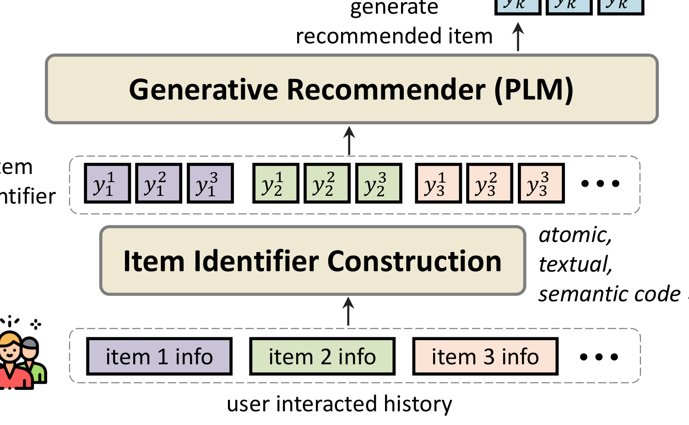
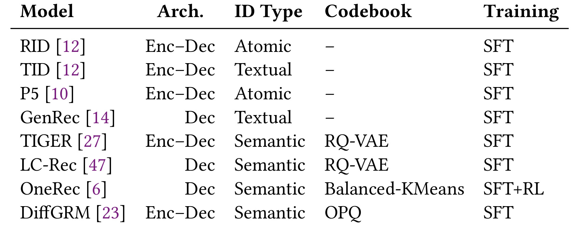
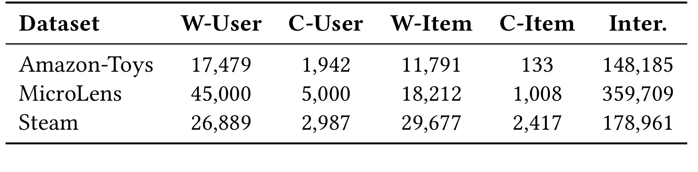
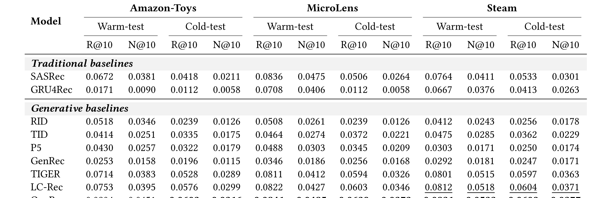
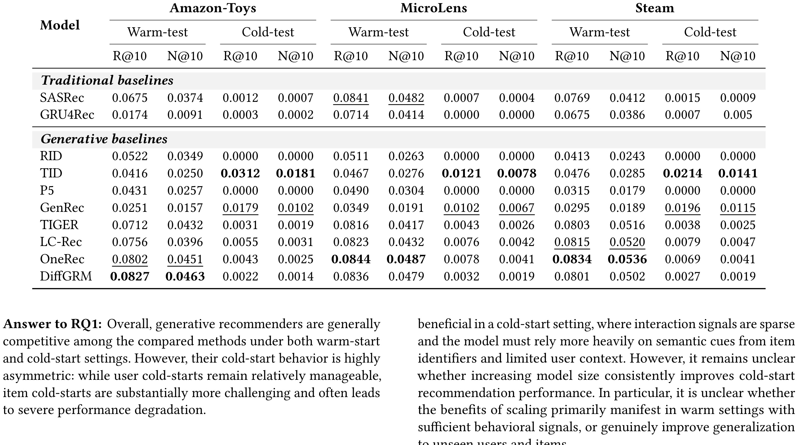
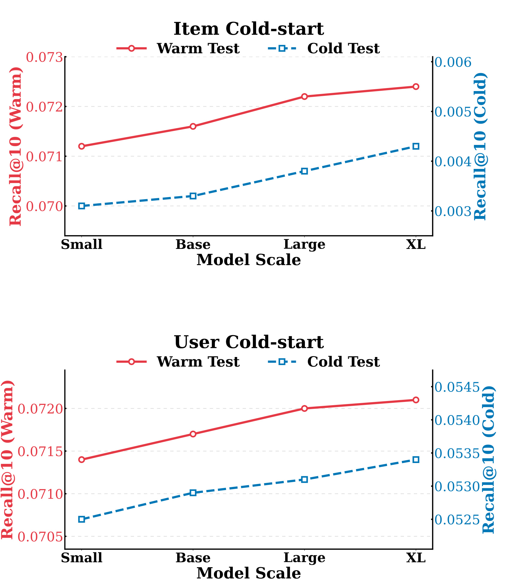
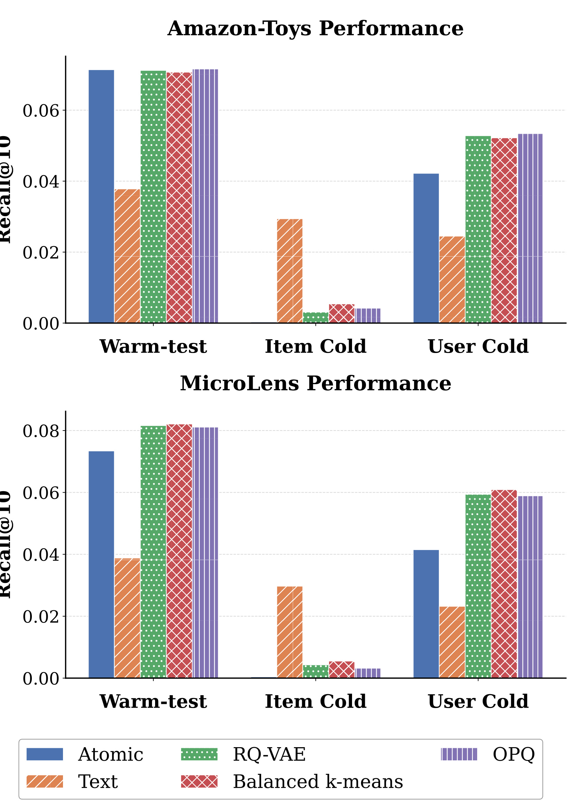
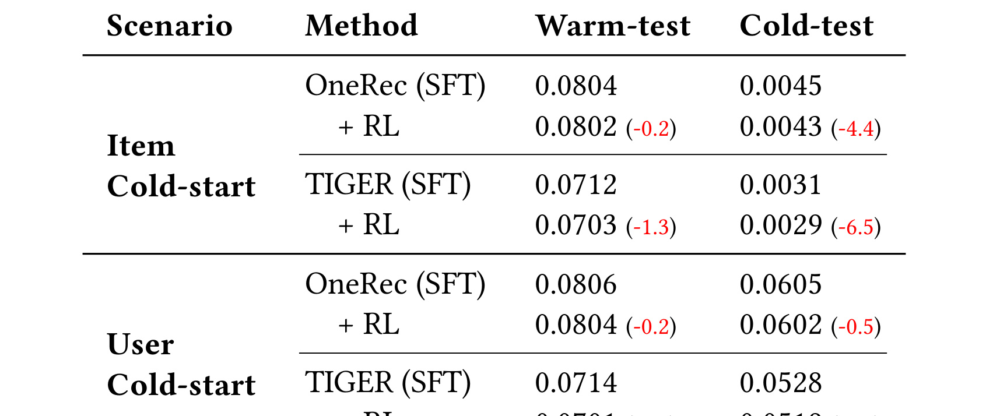

Cold-Starts in Generative Recommendation: A Reproducibility Study 精读笔记
这篇论文是一项面向生成式推荐冷启动问题的可复现性研究，论文一作 Zhen Zhang 来自 Shandong University，合作机构包括 Leiden University、Baidu Inc. 与 University of Amsterdam。论文入口为 arXiv:2603.29845，作者在正文脚注与资源章节中给出了代码与数据仓库 ColdGenrec。它不是提出一个全新的推荐模型，而是把近几年生成式推荐里最容易被混淆的三类变量——模型规模、物品标识符设计、训练策略——放到同一套用户冷启动与物品冷启动协议下重新测量。
生成式推荐常被期待依靠 PLM 的语义知识自然缓解冷启动，但现有研究很少把冷启动作为主评测场景，而且模型规模、标识符设计和训练策略经常同时变化，导致我们无法判断性能差异到底来自语义泛化、协同记忆、输出空间设计，还是训练目标本身。本文要解决的核心矛盾，就是在统一协议下拆开这些因素，证明“能读懂语义”并不等于“能推荐训练中从未见过的新物品”。
1. 背景和问题
推荐系统的冷启动有两个方向：新用户缺少长期历史，新物品缺少交互反馈。传统协同过滤、序列推荐和图推荐高度依赖用户—物品交互，因此在这两个方向都会遇到信号不足。生成式推荐看起来给了一个诱人的替代范式：把推荐写成条件文本生成或离散标识符生成，模型读入用户历史，再生成目标物品的 identifier。如果 identifier 包含标题、描述或语义码，PLM 似乎可以用预训练知识理解新物品；如果用户只有少量历史，PLM 也似乎能靠上下文推断偏好。这正是很多 LLM4Rec / generative recommendation 论文的隐含假设。更进一步说，这种假设如果不被拆开验证，就会把“文本语义可理解”“候选可被生成”“用户真的会偏好”三件事混成一个指标，进而高估生成式范式对真实新物品分发的帮助。这里的评测边界尤其关键。
但作者指出，这个假设长期缺少干净验证。已有论文往往在 warm setting 或普通留出集上报告效果，冷启动只是附带分析；更麻烦的是，不同方法同时改变模型 backbone、identifier 类型、codebook、训练目标和推理约束。例如一个方法从 atomic ID 换成 semantic code，同时也从 encoder-decoder 换到 decoder-only，再加入 RL 或 DPO；如果最终 item cold-start 好了一点，我们无法知道是哪一个因素起作用。反过来，如果性能下降，也不能简单说语义标识符无效，因为可能是训练目标、解码方式或 code assignment 不稳定。
本文的核心价值就在这里：它把 cold-start 从“附属测试”提升为主问题，并且明确区分用户冷启动和物品冷启动。用户冷启动仍然可以给模型一小段已知物品历史，模型只需要从短上下文里提取偏好，再在训练中见过的大部分候选物品上排序；物品冷启动则要求模型把训练中从未作为目标优化过的新物品推荐出来，这会同时挑战 item identifier 的可生成性、语义表示的可迁移性和候选空间的分布外泛化。论文实验最终证明，这两个冷启动不是同一个难度：用户冷启动只有中等退化，物品冷启动才是生成式推荐最容易崩塌的地方。
作者在相关工作中进一步区分 generative retrieval 与 generative recommendation。检索任务里的新文档通常可以靠 query-document 语义匹配弥补互动缺失，而推荐任务依赖的是行为预测：用户是否会喜欢一个 item，不只由标题语义决定，还由群体共现、时序兴趣、曝光机制和平台反馈塑造。因此，论文反复强调 semantic features alone cannot substitute for collaborative signals。这个判断对工程读者很重要：如果一个新物品有漂亮标题和描述，文本 identifier 可以让模型“知道它是什么”，但不保证模型知道“哪个用户会要它”。
这篇论文的四个研究问题也围绕上述矛盾展开。RQ1 问代表性生成式推荐器在统一冷启动协议下表现如何；RQ2 问扩大 PLM backbone 是否能弥合冷启动 gap；RQ3 问 atomic、textual、semantic code 等标识符设计如何影响新用户和新物品泛化；RQ4 问 SFT 后加入 RL 是否能提升冷启动鲁棒性。四个问题共同服务于一个更大的判断：生成式推荐的冷启动能力不能靠单点 leaderboard 证明，必须拆开模型规模、输出编码和训练目标逐项归因。
2. 方法
2.1 生成式推荐的形式化：推荐被改写为 identifier 生成
论文首先把 generative recommendation 写成统一概率形式。设用户集合为 $\mathcal{U}$，物品集合为 $\mathcal{I}$。每个物品 $i\in\mathcal{I}$ 对应一个唯一 identifier $y_i$，它本身是 token 序列：
推理时，模型要在候选集合中选择生成概率最高的物品；这个步骤把 token 级生成概率重新投影回 item 排序空间，也是 warm 与 cold 物品竞争的直接位置，决定了新物品即使被加入合法 trie 后能否获得足够高的排序概率，并让不同 identifier 设计之间的泛化差异最终体现为可排序分数：


2.2 物品冷启动协议：新物品挑战的是输出空间泛化
物品冷启动被定义为训练中未出现的 item 在测试阶段成为推荐目标，它挑战的是模型能否为训练目标之外的新输出对象分配合理生成概率。设训练中见过的物品集合为 $\mathcal{I}_{\mathrm{tr}}\subset\mathcal{I}$，冷启动物品集合为：
这个设置特别考验 identifier 的归纳能力。atomic ID 对冷物品最不友好，因为新 token 或新 token 组合从未作为训练目标出现，模型没有学习过生成它们。textual identifier 最有机会利用预训练语言知识，因为标题和描述中的 token 可能在 PLM 预训练中出现过；但标题并不是为唯一检索优化的标识符，两个不相关物品可能有相似词，热门物品标题也可能不够区分用户偏好。semantic code 看似折中：它把 item 表示压成离散码，理论上可以让相似物品共享部分 code，但如果 codebook 是在训练物品上学到的，新物品被量化到哪个 code、code 组合是否能被 autoregressive decoder 稳定生成，都会影响 item cold-start。
本文的实验设计把物品冷启动做成时间切分：按时间排序交互，前 90% 用于训练，后 10% 用于验证和测试；若测试交互的目标 item 在 90% 时间点后才第一次出现，就归为 cold item，否则归为 warm item。这个协议比随机切分更贴近动态平台，因为新商品、新视频、新游戏确实是在系统运行后进入目录。它也避免把未来交互泄漏给训练阶段：模型可以使用 item metadata，但不能使用训练截断后才发生的交互信号。
2.3 用户冷启动协议：新用户挑战的是短上下文偏好推断
用户冷启动被定义为测试用户在训练阶段完全未出现。与物品冷启动相比，它的候选 item 多数仍处在训练分布内，主要挑战是短历史偏好推断而不是新输出标识符生成。设训练用户集合为 $\mathcal{U}_{\mathrm{tr}}\subset\mathcal{U}$，冷用户集合为：
这种差异解释了后面实验的非对称结果。用户冷启动虽然缺少用户长期 profile，但生成式推荐天然就是 conditioned on history，只要短历史里有足够偏好线索，模型仍可工作；物品冷启动则需要模型既理解新物品语义，又愿意在概率空间里生成其 identifier，还要在排序中把它压过大量 warm items。论文结论中“user cold-start moderate, item cold-start severe”的判断，就是从这两个协议的结构差异推出来的。
2.4 复现对象与设计维度：把混在一起的因素拆开
作者选择了三类数据集：Amazon-Toys、MicroLens 和 Steam。它们都具备较大规模交互和较丰富 item metadata：Amazon-Toys 有电商商品标题和层级类别，MicroLens 是微视频推荐数据集并包含多模态信息，Steam 有游戏描述、开发者标签和用户自定义类别。选择这些数据集的原因不是它们覆盖所有业务，而是它们能支持冷启动研究：如果没有可靠 metadata，textual identifier 和 semantic code 的冷启动泛化无法被公平评估。
复现方法方面，作者不仅比较生成式方法，也加入 SASRec 和 GRU4Rec 作为传统序列 baseline。生成式方法覆盖 RID、TID、P5、GenRec、TIGER、LC-Rec、OneRec 和 DiffGRM。这样设计有两个作用：第一，可以看生成式方法相对传统协同/序列模型是否真的更抗冷启动；第二，可以在生成式方法内部拆分三类因素。模型规模用 TIGER 搭配 flan-t5-small/base/large/xl 控制，固定 identifier 和训练策略；identifier 设计用同一 encoder-decoder 框架比较 atomic ID、textual title、RQ-VAE、Balanced k-means 和 OPQ；训练策略用 OneRec/TIGER 的 SFT 与 RL 变体比较。
这套设计的强处在于“控制变量”。很多生成式推荐论文的贡献是系统工程式组合，效果可能来自多个模块叠加；本文作为 reproducibility study，不追求提出最强模型，而是追问：如果只扩大模型，冷启动 gap 是否消失？如果只换 identifier，物品冷启动是否改善？如果只加 RL，分布外鲁棒性是否提高？这种问题意识比单纯再跑一个排行榜更有价值。
2.5 统一评估实现：同一协议下看 Recall@10 与 NDCG@10
实验统一报告 Recall@10 和 NDCG@10。Recall@10 衡量目标 item 是否进入前十，NDCG@10 进一步考虑排名位置。所有模型在 warm-start、user cold-start、item cold-start 三个 setting 下评估。对生成式方法，作者使用各自官方实现，并尽量遵守原论文默认超参；传统 baseline 用 RecBole 实现；大模型训练在 8 张 NVIDIA A800 GPU 上分布式运行。这个实现细节有助于理解“可复现性研究”的含义：作者不是抽象讨论方法优劣，而是在一个统一冷启动协议下重跑代表性系统。但也要看到边界。不同方法的原始实现质量、调参预算和训练成本不同，完全公平很难做到；作者的目标不是宣布某个模型绝对胜出，而是识别跨方法一致出现的趋势。比如 item cold-start 对大多数非文本 identifier 都很难、扩参只有边际收益、RL 不稳定，这些趋势比单个表格中的第一名更重要。读这篇论文时，应该把它当成“生成式推荐冷启动归因实验”，而不是“2026 年最强推荐模型排行榜”。
3. 实验结果
3.1 整体表现：物品冷启动远比用户冷启动更难

整体结果先回答 RQ1：生成式推荐在 warm-start 和用户冷启动下确实有竞争力，但 item cold-start 退化非常严重。用户冷启动表中，TIGER、LC-Rec、OneRec、DiffGRM 在多个数据集上超过传统 SASRec/GRU4Rec，尤其 semantic-code 方法在 warm 和 user-cold 下表现稳定。说明当候选 item 仍主要来自训练分布时，生成式模型能从短历史里推断偏好，语义码或 learned code 也能形成可生成的紧凑输出空间。


作者把这个现象概括为冷启动的非对称性。user cold-start 的用户身份虽然未知，但目标 item 和 identifier 大多已被训练；item cold-start 的目标 item 本身不在训练目标分布里，即便语义上可描述，也缺少协同反馈和生成概率校准。对线上推荐来说，这意味着“新用户推荐”和“新内容曝光”不能用同一个冷启动指标概括。一个模型在新用户上稳定，不代表它能把新视频、新商品、新游戏召回出来。
3.2 模型规模：扩参有趋势，但不能弥合冷启动 gap
RQ2 使用 TIGER 作为 controlled setup，把 backbone 从 flan-t5-small 扩到 base、large、xl，同时保持 identifier 设计、训练策略和其他组件不变。这个实验比直接比较不同方法更干净，因为它只改变模型规模。结果显示 warm-start、user cold-start 和 item cold-start 都存在单调或近似单调提升，说明更大的 PLM 确实提供更强表示能力和语义建模能力。

这个结论对 LLM4Rec 很有现实意义。很多工程直觉会认为，既然冷启动需要语义理解，那么上更大的 LLM 就会解决问题。本文的结果更保守：更大模型有帮助，但收益是 marginal，而且成本可能很高。如果 identifier、候选生成和训练协议没有冷启动意识，扩参只是在原有输出空间上做更好的语言/序列建模，并不会凭空补齐协同信号。对生产链路来说，先设计新物品可生成、可校准、可探索的候选机制，可能比单纯扩大 backbone 更重要。
3.3 标识符设计：文本 ID 改善新物品，却牺牲 warm 与新用户稳定性
RQ3 是本文最有信息量的部分之一。作者固定代表性 encoder-decoder 生成器，比较 atomic IDs、textual titles、RQ-VAE、Balanced k-means 和 OPQ semantic code。identifier 是生成式推荐的输出空间，因此它直接决定模型如何把用户历史映射到物品。冷启动场景下，identifier 还决定新物品是否能借助语义或组合结构进入概率空间。

atomic ID 的缺陷最直观：warm 时唯一性好，item cold 时几乎崩溃，因为新物品的 identifier 对模型来说没有语义也没有训练概率。semantic code 的表现更复杂。RQ-VAE、Balanced k-means 这类 code 在 warm 和 user cold 下通常稳定，因为它们把 item 压成短离散序列，输出空间比长文本更可控，也能携带一部分语义/协同结构；但在 item cold 下，code assignment 对新物品是否稳定、是否落在可泛化区域，非常关键。若新物品被量化到不合适的 code，或者 autoregressive 生成前缀错误会级联，cold performance 就会低。
OPQ 的表现给了一个重要线索。论文认为更 compositional 的语义编码能改善鲁棒性，因为 OPQ 对不同子空间独立量化，产生更 factorized 的 token 组合，减少强序列依赖和错误传播。这对 Semantic ID 研究很有启发：问题不只是“语义码是否包含语义”，还包括 code 是否组合化、是否能对未见 item 稳定赋码、是否允许模型在部分 token 上泛化。生成式推荐里的 identifier 设计，应该同时追求语义可迁移、唯一可判别和解码稳定；三者很难同时免费获得。
3.4 训练策略：RL 不会自动带来冷启动鲁棒性
RQ4 比较 SFT 与额外 RL 阶段。直觉上，RL 可以直接优化 ranking-oriented reward，可能比 token-level likelihood 更贴近 Recall/NDCG；但冷启动是分布外问题，reward 往往来自训练分布。如果 RL 鼓励模型强化常见 identifier pattern 或 seen item preference，它未必能帮助 unseen item，甚至可能降低泛化。

这说明推荐生成器的后训练目标必须对 distribution shift 有显式意识。若 reward 只来自训练分布或 warm validation，它可能让模型更偏向已知热门模式，提高 seen data 上的局部排序，却损害对新 item identifier 的探索与校准。冷启动场景需要的 reward 可能应当显式纳入新物品覆盖、长尾曝光、多样性、探索价值或时间切分外推，而不是把普通 ranking reward 直接套在 SFT 模型之后。
3.5 综合读表：生成式推荐的冷启动能力来自设计折中，而不是范式红利
把所有实验合起来看，本文并没有否定生成式推荐。相反，它显示生成式方法在 warm 和 user cold 下很有竞争力，semantic-code 方法尤其稳定；textual identifier 确实能显著改善 item cold-start；扩参也有一致但有限的增益。问题在于，这些优势都伴随边界和代价。textual identifier 提高新物品泛化，却降低 warm/user-cold；semantic code 保持 warm 稳定，却容易在 item cold 下退化；RL 提高 warm ranking 的直觉没有自然迁移到冷启动；扩参无法消除输出空间错位。
因此，论文最重要的实验证据不是某个方法第一，而是三条设计原则。第一，物品冷启动必须单独报告，不应被平均 Recall 或用户冷启动掩盖。第二，identifier 是生成式推荐的核心建模对象，应该被当作模型设计的一等公民，而不是后处理编码选择。第三，训练目标需要和冷启动协议对齐；如果评估关注未见 item，训练也要有能够模拟或鼓励未见 item 泛化的机制。
对工程落地而言，我会把这篇论文和近期 Semantic ID、LLM4Rec、冷启动检索论文放在一起读。它提醒我们，生成式推荐不是把 item ID 换成 token 后就获得 PLM 魔法；每一种 tokenization 都是在唯一性、语义性、协同性和可生成性之间取舍。若业务目标是新内容分发，可能需要偏向文本/多模态语义和探索 reward；若业务目标是高频 warm 排序，紧凑 semantic code 与协同结构更重要；若想两者兼得，就需要像 OPQ/compositional code、dual identifier、hybrid retrieval 或 cold-start-aware objective 这样的结构化设计。
4. 总结
我的判断是，这篇论文最值得保留的结论是：生成式推荐的冷启动能力不是范式自带红利，而是 identifier、训练协议和评估切分共同塑造出来的结果。PLM 语义知识确实能帮助理解新物品，尤其 textual identifier 在 item cold-start 上的提升非常明显；但推荐系统需要的不只是“理解物品文本”，还要把物品放进用户偏好、协同结构和曝光策略中。没有交互信号时，语义只能补一部分缺口，不能替代协同反馈。
工程启发有三点。第一，评测必须拆桶：warm、user cold、item cold 至少分开报 Recall@10/NDCG@10，最好再按新物品比例、长尾程度、文本质量和时间跨度细分。第二，Semantic ID 设计要重视组合化和可迁移赋码；OPQ 结果说明降低 autoregressive code 之间的强依赖，可能比单纯让 code 更“语义”更关键。第三，RL 或偏好优化不能直接假设会提升冷启动，需要让 reward 显式关注 unseen item、coverage、探索和分布外鲁棒性，否则它可能只是强化训练分布的热门模式。
局限也很清楚。第一，论文只在三个公开数据集上复现，真实短视频、电商广告或内容社区里的多模态、审核、供给冷启动和探索约束更复杂。第二，作者复现的是代表性方法而非所有可能的强工业实现，闭源大模型、生产级召回融合、线上 bandit 探索可能改变绝对数值。第三，论文主要给实证归因，尚未理论解释 quantization structure、token factorization 和 distribution shift 之间的机制。第四，实验关注离线 top-K 指标，未直接覆盖新物品长期曝光、公平性、创作者生态或用户留存。
后续值得跟进三条线。第一，设计同时保留文本语义和协同判别性的 dual identifier，让模型在 item cold 时能借文本泛化，在 warm 时仍能利用紧凑 code 精确区分。第二，把 cold-start-aware objective 加入训练，例如对新物品覆盖、探索多样性、长尾校准设置显式 reward，而不是只做 warm distribution 上的 SFT/RL。第三，在生产 replay 中记录“新物品未被生成”“生成了但排序低”“identifier 冲突或赋码不稳”三类错误，把生成式推荐从端到端黑盒结果拆回可诊断链路。
如果只用一句话概括：这篇论文把“PLM 能读语义，所以生成式推荐天然抗冷启动”的直觉拉回到可复现评测里，证明真正困难的是新物品输出空间的可生成、可区分和可校准；模型变大有帮助，文本 ID 有帮助，RL 未必有帮助，而 identifier 设计才是冷启动泛化的主战场。